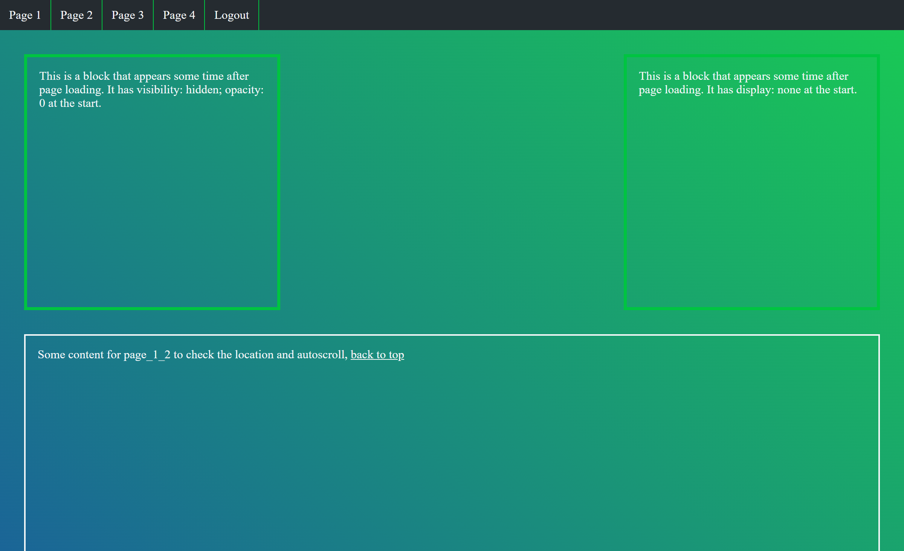
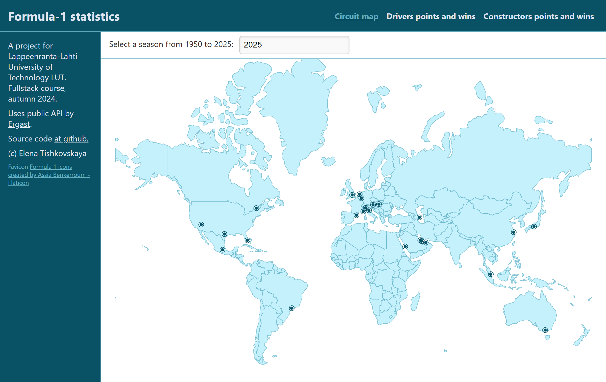
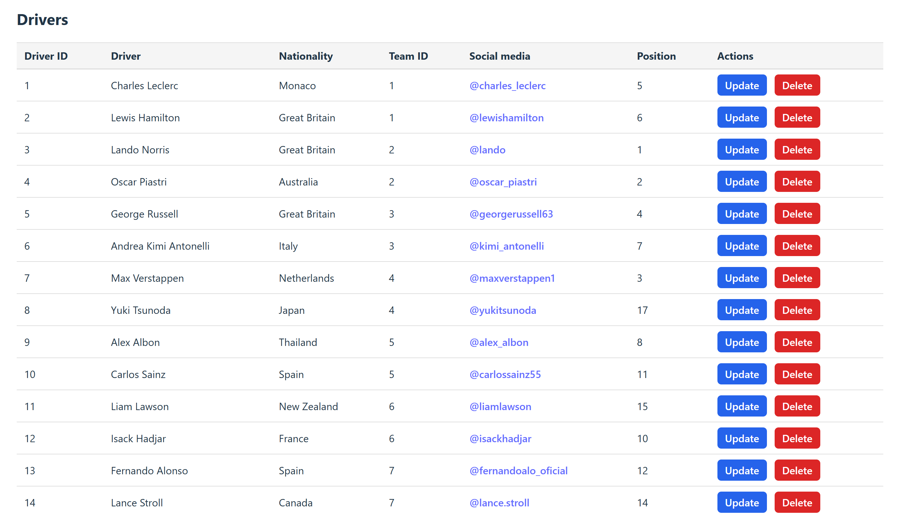

What I do
- Test frontend and backend systems through end-to-end, API, integration, and exploratory testing.
- Find the root causes of problems using technical knowledge and logical thinking.
- Pay attention to details and question anything that seems unusual or unexpected.
Projects
-

A small example of using Robot Framework. The test page contains different HTML elements, and the test cases are available on GitHub. They can be run from the main branch by clicking Run workflow in GitHub Actions.
Stack: Robot Framework, HTML, CSS, Javascript, GitHub Actions -
Satu goes to Harbour
A game made with Unity, source code available on GitHub. Made for the Master's Game development course in LUT university in 2025.
Stack: C#, Unity -

Formula 1 statistics
A full-stack project developed as part of my Master's studies at LUT University in 2024. Running on Netlify, source code available on GitHub. The project uses the public Ergast Developer API to retrieve Formula 1 statistics, including racing seasons, circuits, drivers, and constructors (teams).
Stack: React, Javascript, d3 -

A couple of projects that explore database design, implementation, and integration by building multiple databases with partially shared data using PostgreSQL and MongoDB, source code available on GitHub. Made for the Master's Data-intensive systems course in LUT university in 2025.
Stack: docker, PostgreSQL, MongoDB, Fastapi, python, React, Javascript